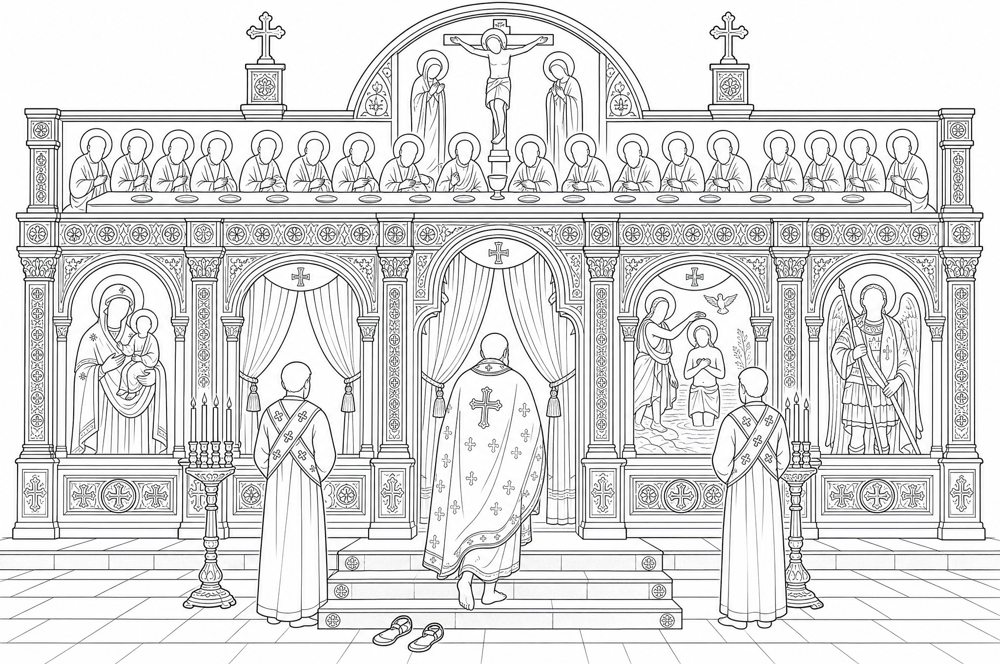
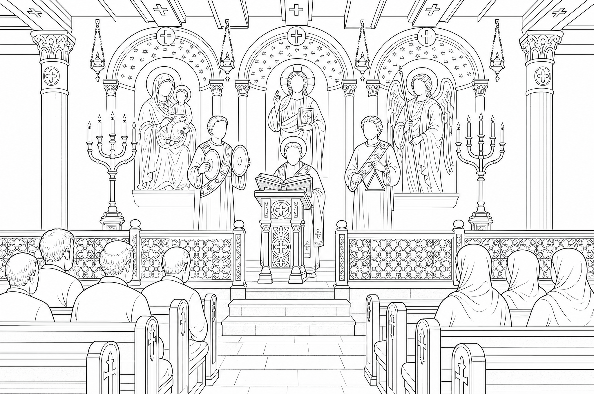
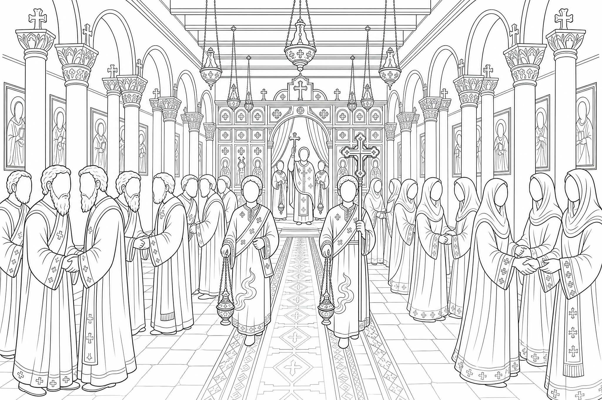
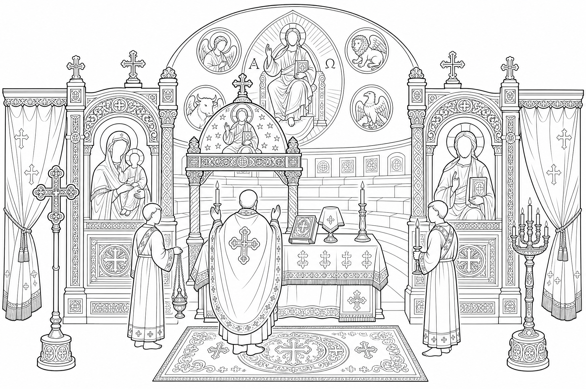
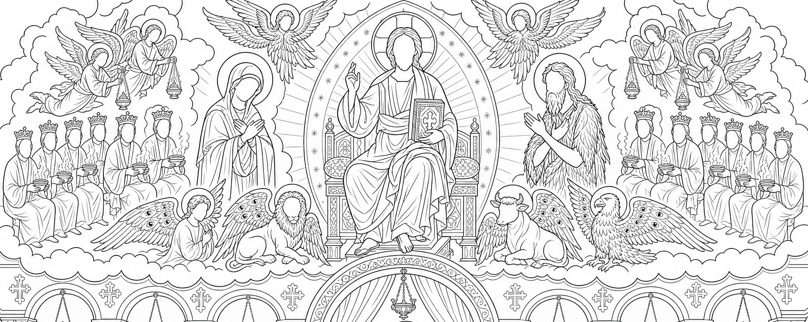

The five Holy Mass scenes in line art (Higgsfield)
Generated with Higgsfield (gpt_image_2) from your saint drawings as the style reference, faces left blank.

1. The sanctuary screen
2. The choir and the Word
3. The nave at the kiss of peace
4. The haikal and the altar
5. Communion and heaven